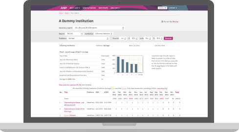

Journal Usage Statistics Portal
JUSP gives librarians a simple way of analysing the value and impact of their electronic journals, books and databases through accurate and comparable usage statistics. JUSP saves academic libraries time and duplicated effort by providing a single gateway for them to access their usage statistics from participating publishers.
Collect
Collect COUNTER-compliant usage data and generate usage reports.
Analyse
Track titles with high usage, analyse trends over time and export your data for more detailed analysis.
Report
Complete summary reports for SCONUL returns, monitoring and performance indicators.
What our users say
Statistics gathering would be more of a drudge and I would be an unhappier Librarian. JUSP = Happiness :-)
The usage statistics are used to inform important decisions and we really want to be sure we can rely on the accuracy of the data; with JUSP we know we can.
JUSP as a central resource spots discrepancies and so helps make the data more reliable for all users.